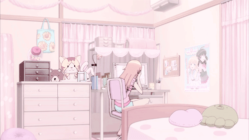

você disse que não conseguiu fazer essa página, então decidi fazer um site com sua ideia pra você
(agora a ideia é minha e o presente é meu)
o PC da minha namorada depois de ser hackeado por mim só pra dizer que eu amo ela
eu quando meu amor me responde
eu quando vejo qualquer coisa sobre meu amorzinho
eu e meu amor
eu quando meu amor nao está feliz, pq minha prioridade é a felicidade da minha namorada
(falhei em minha missao de mante-la feliz)
eu admirando minha namorada antes de ir falar com ela, pq eu a amo muito e poderia passar uma eternidade só olhando pro rostinho do meu amor
abraçando meu amor enquanto ela lava as maçãs pra mim comer depois
(ela é o amor da minha vida)
eu indo pros braços do meu amor sempre que me sinto mal
(ela é o meu guarda chuva. sem ela eu não conseguiria aguentar muito tempo nesse mundo fútil)
obs 1: qualquer lugar em que minha namorada não esteja, não é um bom lugar.
obs 2: só me sinto completa quando estou com ela
eu contando o tempo que falta para o amor da minha vida chegar em casa
foca foca foca foca

eu na minha cama esperando meu amor voltar
o amor da minha vida (Ysa) refletindo nos meus olhos pq eu amo muito ele
só queria te dizer o quanto você é especial pra mim
as vezes, parece que meu coração vai explodir de tanto carinho por você. não é aquele amor de filme, é algo muito mais real, mais bagunçado, mas ao mesmo tempo, mais incrível. é acordar pela manhã e sorrir só de pensar em você.
não sei o que o futuro reserva, mas eu quero encarar isso contigo. seja nas risadas ou nos momentos mais difíceis, eu tô aqui. não importa o que aconteça, acredita, eu tô aqui pra ficar.
e lembra, mesmo nos dias complicados, mesmo quando tudo parece uma bagunça, você é a minha bagunça favorita. te amo demais